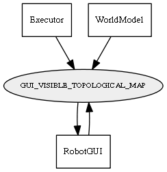

Global overview
All modules
All variables
All commands
Mission files
Pipelines
Variable: GUI_VISIBLE_TOPOLOGICAL_MAP
Variable info:
Variable name
Short description
Who publishes it?
Who subscribes to it?
GUI_VISIBLE_TOPOLOGICAL_MAP
Whether to show (="1") or not (="0") the topological map.
Executor
RobotGUI
WorldModel
RobotGUI
Variable graph:

Detailed description:
Whether to show (="1") or not (="0") the topological map.
Page generated by
Mooxygen 1.1.0
at Thu Jan 22 11:30:21 2015